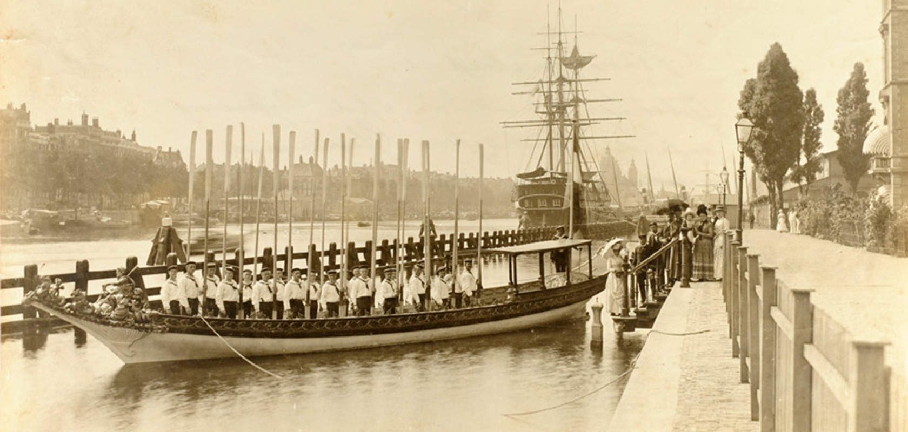

Aan de hand van verschillende objecten en verhalen, die zich op specifieke plekken in de haven en de stad hebben afgespeeld,
word je meegenomen in het heden, verleden en toekomst van de verbintenis tussen de haven en de stad.
De tentoonstelling start in de 13e eeuw en eindigt met een blik op de toekomst.
In de eerste periode staan de vorming van de stad en de haven centraal.
Door middel van archeologische vondsten wordt geïllustreerd hoe Amsterdam en haar haven uitgroeiden tot de belangrijkste
haven van de Nederlanden. In de periode daarna, van 1600 tot en met 1800, groeien haven en stad zelfs uit naar een toegangspoort
tot de wereld. Aan het einde van de 19e eeuw beleeft de haven een tweede bloeiperiode.
De stoomvaart komt op en scheepsbouw is belangrijk voor de werkgelegenheid.
Vandaag de dag zijn haven en stad nog steeds nauw verbonden. Thema's als gebiedsontwikkeling en huisvesting staan hoog op beide agenda's.
Ook wordt er naar de toekomst gekeken met onderwerpen als energie, duurzaamheid en mobiliteit.

Geschiedenis Scheepvaartmuseum
De Vereeniging Nederlandsch Historisch Scheepvaart Museum is in 1916 opgericht en eigenares van een van de meest vooraanstaande maritieme collecties ter wereld, een rechtstreeks gevolg van het succes van de Eerste Nederlandse Tentoonstelling op Scheepvaartgebied in 1913. De ongeveer 300.000 objecten zijn afkomstig van rederijen, verzamelaars en liefhebbers uit de maritieme en marinewereld. Oorspronkelijk was het museum gevestigd in een gebouw op de hoek Cornelis Schuytstraat / De Lairessestraat in Amsterdam-Zuid, tot 2018 veilinghuis Christie's. De oorspronkelijke functie is nog te zien aan de golfmotieven in de bakstenen gevel.
Sinds 1973 is het museum gevestigd in 's Lands Zeemagazijn aan het Oosterdok bij het IJ in Amsterdam. Kroonprinses Beatrix der Nederlanden heropende het museum in april van dat jaar op de nieuwe locatie.
Tijdens een grote renovatie tussen 2007 en 2011 was het museum voor het publiek gesloten. In die periode is onder andere de binnenplaats overdekt met een glazen overkapping. Het ontwerp van het renovatieplan is van de architect Liesbeth van der Pol. Het depot van het museum uit 2001, het Behouden Huis, op het naastgelegen Marine Etablissement Amsterdam is eveneens door haar ontworpen. Na de ingrijpende verbouwing is het museum sinds oktober 2011 weer open. Ook de replica van de Oost-Indiëvaarder Amsterdam ligt sindsdien weer aan de steiger bij Het Scheepvaartmuseum.